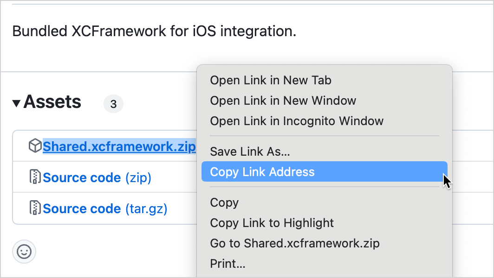
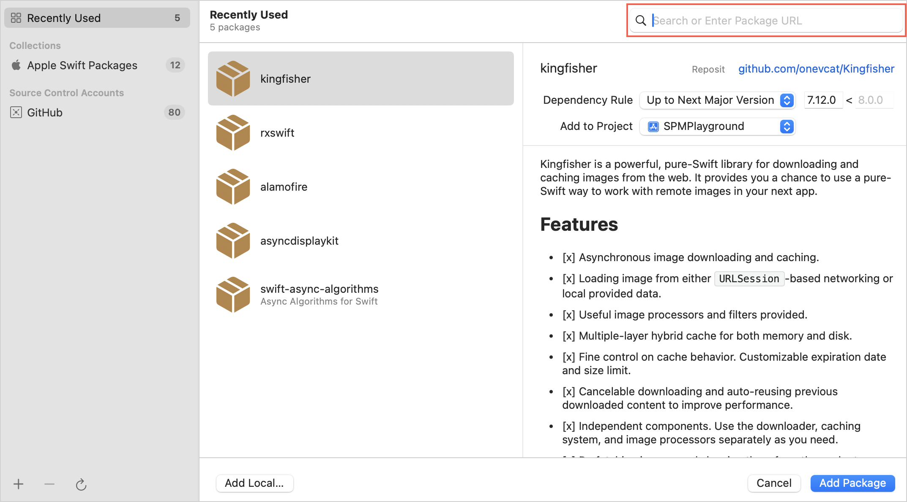

You can set up the Kotlin/Native output for an Apple target to be consumed as a Swift package manager (SPM) dependency.
Consider a Kotlin Multiplatform project that has an iOS target. You may want to make this iOS binary available as a dependency to iOS developers working on native Swift projects. Using Kotlin Multiplatform tooling, you can provide an artifact that would seamlessly integrate with their Xcode projects.
This tutorial shows how to do this by building XCFrameworks with the Kotlin Gradle plugin.
Set up remote integration
To make your framework consumable, you'll need to upload two files:
A ZIP archive with the XCFramework. You'll need to upload it to a convenient file storage with direct access (for example, creating a GitHub release with the archive attached, using Amazon S3 or Maven). Choose the option that is easiest to integrate into your workflow.
The Package.swift file describing the package. You'll need to push it to a separate Git repository.
Project configuration options
In this tutorial, you'll store your XCFramework as a binary in your preferred file storage, and the Package.swift file in a separate Git repository.
However, you can configure your project differently. Consider the following options for organizing Git repositories:
Store the Package.swift file and the code that should be packaged into an XCFramework in separate Git repositories. This allows versioning the Swift manifest separately from the project the file describes. This is the recommended approach: it allows scaling and is generally easier to maintain.
Put the Package.swift file next to your Kotlin Multiplatform code. This is a more straightforward approach, but keep in mind that, in this case, the Swift package and the code will use the same versioning. SPM uses Git tags for versioning packages, which can conflict with tags used for your project.
Store the Package.swift file within the consumer project's repository. This helps to avoid versioning and maintenance issues. However, this approach can cause problems with multi-repository SPM setups of the consumer project and further automation:
In a multi-package project, only one consumer package can depend on the external module (to avoid dependency conflicts within the project). So, all the logic that depends on your Kotlin Multiplatform module should be encapsulated in a particular consumer package.
If you publish the Kotlin Multiplatform project using an automated CI process, this process would need to include publishing the updated Package.swift file to the consumer repository. This may lead to conflicting updates of the consumer repository and so such a phase in CI can be difficult to maintain.
Configure your multiplatform project
In the following example, the shared code of a Kotlin Multiplatform project is stored locally in the shared module. If your project is structured differently, substitute "shared" in code and path examples with your module's name.
To set up the publishing of an XCFramework:
Update your shared/build.gradle.kts configuration file with the XCFramework call in the iOS targets list:
import org.jetbrains.kotlin.gradle.plugin.mpp.apple.XCFramework
kotlin {
// Other Kotlin Multiplatform targets
// ...
// Name of the module to be imported in the consumer project
val xcframeworkName = "Shared"
val xcf = XCFramework(xcframeworkName)
listOf(
iosX64(),
iosArm64(),
iosSimulatorArm64(),
).forEach {
it.binaries.framework {
baseName = xcframeworkName
// Specify CFBundleIdentifier to uniquely identify the framework
binaryOption("bundleId", "org.example.${xcframeworkName}")
xcf.add(this)
isStatic = true
}
}
//...
}
Run the Gradle task to create the framework:
./gradlew :shared:assembleSharedXCFramework
The resulting framework will be created as the shared/build/XCFrameworks/release/Shared.xcframework folder in your project directory.
Prepare the XCFramework and the Swift package manifest
Compress the Shared.xcframework folder in a ZIP file and calculate the checksum for the resulting archive, for example:
swift package compute-checksum Shared.xcframework.zip
Upload the ZIP file to the file storage of your choice. The file should be accessible by a direct link. For example, here's how you can do it using releases in GitHub:
Navigate to the repository where you want to create a release.
In the Releases section on the right, click the Create a new release link.
Fill in the release information, add or create a new tag, specify the release title and write a description.
Upload the ZIP file with the XCFramework through the Attach binaries by dropping them here or selecting them field at the bottom:
Click Publish release.
Under the Assets section of the release, right-click on the ZIP file and select Copy link address or a similar option in your browser:

[Recommended] Check that the link works and that the file can be downloaded. In the terminal, run the following command:
curl <downloadable link to the uploaded XCFramework ZIP file>
Choose any directory and locally create a Package.swift file with the following code:
// swift-tools-version:5.3
import PackageDescription
let package = Package(
name: "Shared",
platforms: [
.iOS(.v14),
],
products: [
.library(name: "Shared", targets: ["Shared"])
],
targets: [
.binaryTarget(
name: "Shared",
url: "<link to the uploaded XCFramework ZIP file>",
checksum:"<checksum calculated for the ZIP file>")
]
)
In the url field, specify the link to your ZIP archive with the XCFramework.
[Recommended] To validate the resulting manifest, you can run the following shell command in the directory with the Package.swift file:
swift package reset && swift package show-dependencies --format json
The output will describe any errors found or show the successful download and parsing result if the manifest is correct.
Push the Package.swift file to your remote repository. Make sure to create and push a Git tag with the semantic version of the package.
Add the package dependency
Now that both files are accessible, you can add the dependency on the package you created to an existing client iOS project or create a new project. To add the package dependency:
In Xcode, choose File | Add Package Dependencies.
In the search field, enter the URL of the Git repository with the Package.swift file inside:

Press the Add package button, then select products and corresponding targets for the package.
Check your setup
To check that everything is set up correctly, test the import in Xcode:
In your project, navigate to your UI view file, for example, ContentView.swift.
Here, you import the Shared XCFramework and then use it to obtain the platform name in the Text field.
Ensure that the preview is updated with the new text.
Exporting multiple modules as an XCFramework
To make code from several Kotlin Multiplatform modules available as an iOS binary, combine these modules in a single umbrella module. Then, build and export the XCFramework of this umbrella module.
For example, you have a network and a database module, which you combine in an together module:
In the together/build.gradle.kts file, specify dependencies and the framework configuration:
kotlin {
val frameworkName = "together"
val xcf = XCFramework(frameworkName)
listOf(
iosX64(),
iosArm64(),
iosSimulatorArm64()
).forEach { iosTarget ->
// Same as in the example above,
// with added export calls for dependencies
iosTarget.binaries.framework {
export(projects.network)
export(projects.database)
baseName = frameworkName
xcf.add(this)
}
}
// Dependencies set as "api" (as opposed to "implementation") to export underlying modules
sourceSets {
commonMain.dependencies {
api(projects.network)
api(projects.database)
}
}
}
Each of the included modules should have its iOS targets configured, for example:
Create an empty Kotlin file inside the together folder, for example, together/src/commonMain/kotlin/Together.kt. This is a workaround, as the Gradle script currently cannot assemble a framework if the exported module does not contain any source code.
Follow the steps from the previous section to prepare together.xcframework: archive it, calculate the checksum, upload the archived XCFramework to the file storage, create and push a Package.swift file.
Now, you can import the dependency into an Xcode project. After adding the import together directive, you should have classes from both the network and database modules available for import in Swift code.